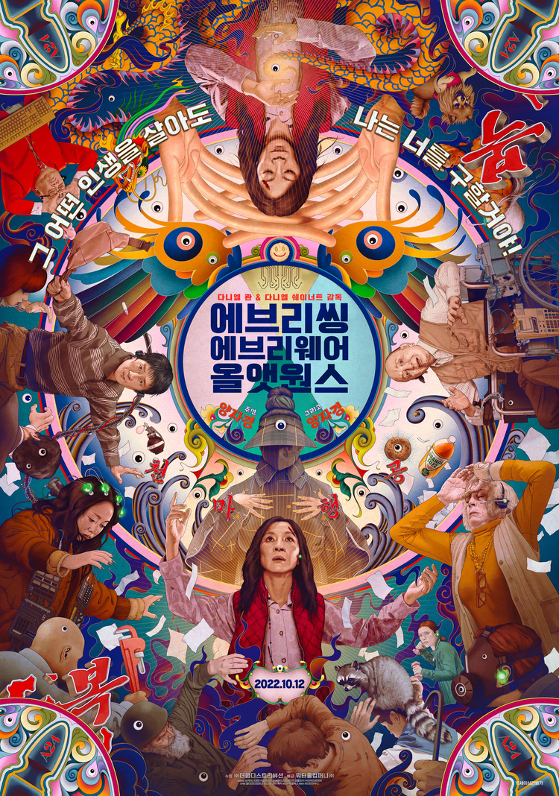

인생영화 BEST 5
| 순위 | 제목 | 포스터 | 줄거리 | 바로가기 |
|---|---|---|---|---|
| 1 | 리틀 포레스트 | “잠시 쉬어가도, 달라도, 평범해도 괜찮아! 모든 것이 괜찮은 청춘들의 아주 특별한 사계절 이야기” | 클릭 | |
| 2 | 써니 |
어느 날 ‘써니짱’ 춘화와 마주친 나미는 재회의 기쁨을 나누며, ‘써니’ 멤버들을 찾아 나서기로 결심하는데… 가족에게만 매어있던 일상에서 벗어나 추억 속 친구들을 찾아나선 나미는 그 시절 눈부신 우정을 떠올리며 가장 행복했던 순간의 자신과 만나게 된다. |
클릭 | |
| 3 | 클래식 |

|
준하는 태수의 이름으로 자신의 마음을 담아 주희에게 편지를 쓴다. 운명이 던져준 또 한번의 인연 편지를 대신 써주며 사랑이 깊어간 엄마와 자신의 묘하게도 닮은 첫사랑. 이 우연의 일치에 내심 의아해하는 지혜는 상민에 대한 생각이 더욱 깊어만 간다. 하지만 이미 친구의 연인이 되어버린 그를 포기하기로 마음먹는데... |
클릭 |
| 4 | 탑건: 매버릭 |

|
한순간의 실수도 용납되지 않는 하늘 위, 가장 압도적인 비행이 시작된다! |
클릭 |
| 5 | 에브리씽 에브리웨어 올 앳 원스 |  |
미국에 이민 와 힘겹게 세탁소를 운영하던 에블린은 세무당국의 조사에 시달리던 어느 날 남편의 이혼 요구와 삐딱하게 구는 딸로 인해 대혼란에 빠진다. 그 순간 에블린은 멀티버스 안에서 수천, 수만의 자신이 세상을 살아가고 있다는 사실을 알게 되고, 그 모든 능력을 빌려와 위기의 세상과 가족을 구해야 하는 운명에 처한다. |
클릭 |